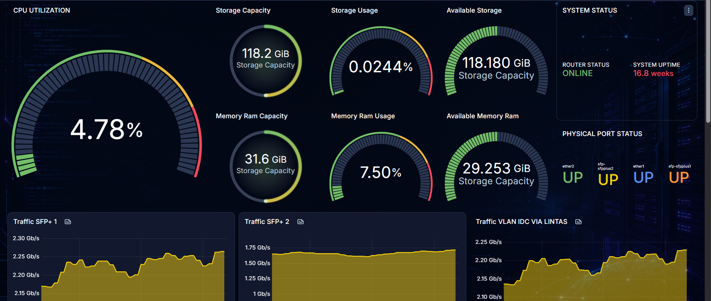

Monitoring Jaringan
Memantau bandwidth pada MikroTik serta kondisi perangkat jaringan seperti OLT, OTB, dan perangkat pendukung lainnya.
01 NETWORK OPERATIONS
Halo, saya Ryan Nur Efendy. Saat ini saya bekerja sebagai Network Operation Center di perusahaan penyedia layanan internet Digital Nusantara.
NETWORK SCAN ACTIVE
02 ABOUT ME
Saya bekerja sebagai NOC di Digital Nusantara dan terus memperdalam kemampuan dalam pemantauan serta operasional jaringan. Perjalanan saya dimulai dari SMK jurusan Multimedia, kemudian melanjutkan kuliah di jurusan Manajemen SDM.
Latar belakang yang beragam membuat saya terbiasa belajar hal baru, beradaptasi, dan melihat masalah teknis dari sudut pandang yang lebih luas.
Sekolah Menengah Kejuruan
Perguruan Tinggi
Digital Nusantara
03 CAPABILITIES
Memantau bandwidth pada MikroTik serta kondisi perangkat jaringan seperti OLT, OTB, dan perangkat pendukung lainnya.
Melayani pelanggan WiFi, mulai dari proses aktivasi layanan hingga penanganan laporan gangguan koneksi.
Melakukan pemeriksaan konfigurasi modem dan memperbaiki pengaturan sebagai langkah awal penanganan gangguan.
TOOLS & TECHNOLOGIES
04 FEATURED PROJECT

Dashboard operasional untuk menampilkan traffic dari seluruh server yang dikelola. Saat ini dashboard memantau 11 server, termasuk traffic bandwidth pada MikroTik, sehingga kondisi jaringan dapat diamati dalam satu tampilan.
PROJECT WORKFLOW
NEXT PROJECTS
Mengembangkan notifikasi otomatis agar gangguan perangkat dapat diketahui dan ditindaklanjuti lebih cepat.
Menyusun dokumentasi visual koneksi dan perangkat untuk membantu pemantauan serta proses troubleshooting.
05 GET IN TOUCH
Terbuka untuk berdiskusi, belajar bersama, dan menjelajahi peluang baru di bidang network operation.
ryannur003@gmail.com